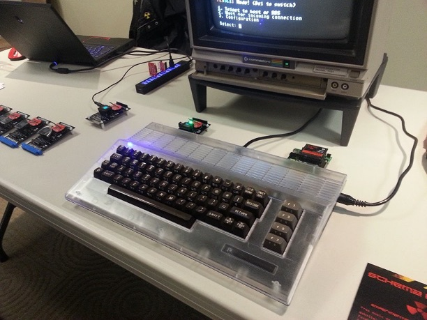
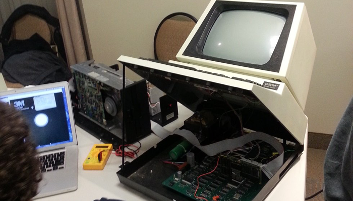

World of Commodore event in Mississauga
Saturday, December 5, 2015
This is the first year that I’ve been to the World of Commodore event (a yearly gathering of Commodorks). In fact, I had no idea that it even existed until someone I knew told me about it.....and since it’s relatively close to me, I just had to go. And I’m glad I did.
It wasn’t a huge event, but there was plenty to see and buy there - my favorite was the Commodore 64 Wi-Fi card as shown below:

There was lots of software and hardware for sale too - the coolest thing I picked up for myself was a NOS (new old stock) Epyx joystick (the best joystick ever made) - it can be used on both Commodore and Atari machines:


I even picked up a cool World of Commodore t-shirt and duffle bag:


Overall - it was a great event, and I plan on going again next year (after all, I DO have a lot of Commodore computers in my vintage computer collection....even if I don’t turn them on regularly ;-)
